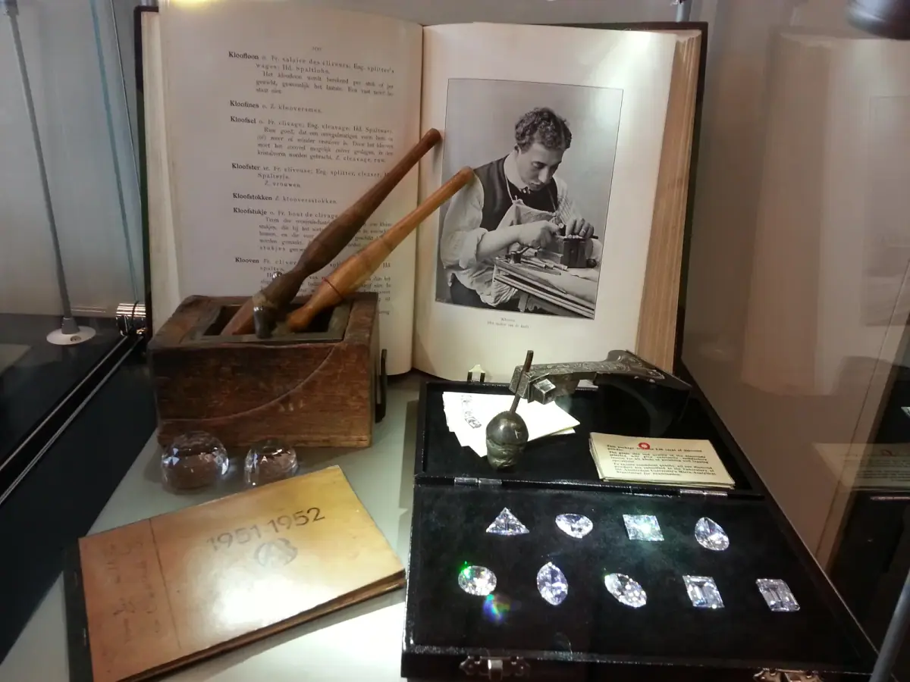
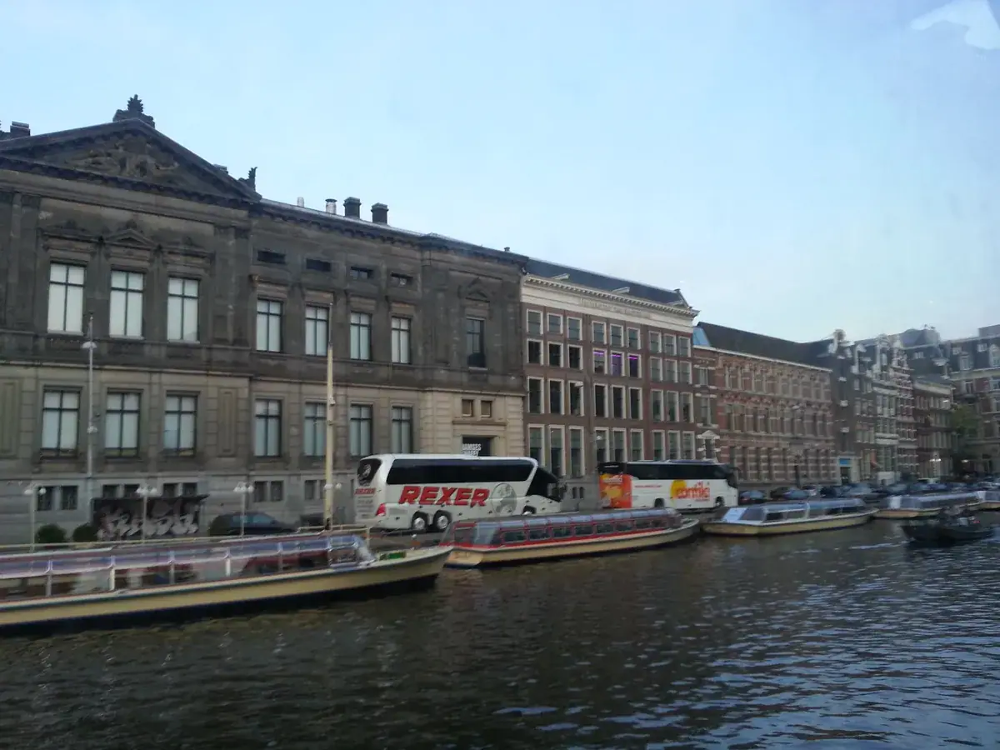
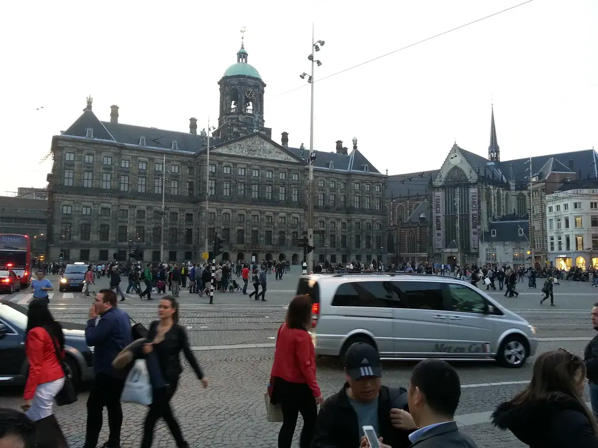
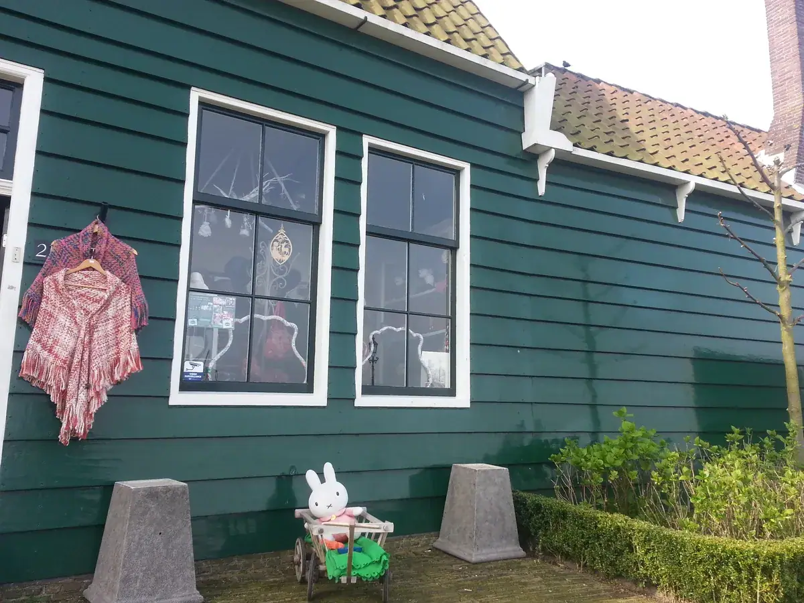
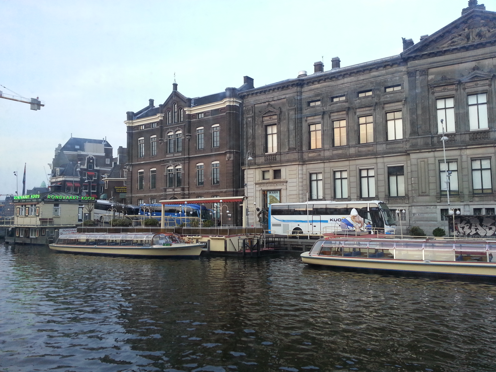

阿姆斯特丹：一座用风车填海造出来的金融首都
Amsterdam — a financial capital reclaimed from the sea with windmills.

阿姆斯特丹给人的第一印象通常是自行车、风车、郁金香、钻石——这四样东西看似风马牛不相及，其实背后是同一个国家几百年一以贯之的逻辑：用有限的自然条件，把商业和效率做到极致。
风车：荷兰人从大海里"抠"出来的国土
欧洲有句老话："上帝创造了人，荷兰风车创造了陆地。"荷兰地处北海要冲，常年受大西洋季风影响，荷兰人很早就学会了用风车抽水排涝——靠着这些矗立在地平线上的抽水风车，荷兰人从海里围垦出了将近国土三分之一的土地，也才有了后来的奶酪牧场和郁金香田。阿姆斯特丹北边的桑斯安斯风车村（Zaanse Schans），是现在保留得最完整的风车聚落之一，有些风车至今仍在运转，用来榨油、磨香料、做颜料。这不是摆拍的"景点风车"，而是一套曾经真实支撑荷兰经济运转了几百年的动力系统。


郁金香：一次疯狂投机，留下了一整个产业
郁金香本身不是荷兰原产，是 16 世纪从奥斯曼帝国引入的。但荷兰人把它变成了自己的国家符号——17 世纪 30 年代，郁金香球茎一度被炒到疯狂的价格，史称"郁金香狂热"（Tulip Mania），被很多人认为是人类历史上第一次有记载的金融泡沫。泡沫破了，但郁金香产业留了下来，今天荷兰依然是全球最大的花卉出口国之一。一场投机泡沫，最后沉淀成了一个国家的支柱产业之一，这个转化过程本身就很值得玩味。


钻石：一个被"没有行会"意外成就的产业
阿姆斯特丹的钻石加工业，源头是一段不太轻松的历史。16 世纪末，大批犹太人（尤其是来自西班牙、葡萄牙的塞法迪犹太人）逃到相对宽容的阿姆斯特丹，但当时的行会体系把犹太人排除在传统手工业之外——恰恰因为钻石切割打磨这个行当当时没有行会限制，犹太人才得以大量进入这个领域，并逐渐做成了阿姆斯特丹的支柱产业之一。17 世纪下半叶到 18 世纪，阿姆斯特丹一度是全世界钻石加工的中心，科依诺尔钻石、南方之星等好几颗历史名钻都曾在这里被切割打磨。1894 年，钻石工人在这里成立了荷兰第一个现代工会，率先在全世界实现八小时工作制——这条线索，倒是跟我们在布鲁塞尔那篇聊到的"欧洲工会文化"隔着一个国家又对上了。
二战期间，阿姆斯特丹犹太钻石工人几乎被摧毁殆尽，战后这座城市的钻石行业地位被安特卫普、纽约、特拉维夫、孟买这些新中心取代，但"钻石之城"的招牌和一批老牌钻石工坊（比如 Coster、Gassan）保留至今，仍然可以现场参观切割打磨。
自行车：效率至上的国民选择
荷兰全国人口约 1700 万，自行车保有量却超过 1800 万辆——车比人还多。阿姆斯特丹市区超过三分之一的出行是靠自行车完成的，全国自行车专用道总长超过 3.5 万公里，人均自行车道长度世界第一。这不是情怀，是这个人口密度很高、土地极其有限的国家，在城市交通效率上做出的理性选择——风车解决了"土地从哪来"的问题，自行车解决了"人怎么在有限的土地上高效移动"的问题，逻辑是一致的。
一个国家真正的韧性，不在于它资源有多丰富，而在于它有没有一套机制，能把偶然和限制都转化成资产。
——董立鑫 海鑫汇创始人兼执行总裁，新加坡世贸秘书长兼首席运营官
真正的底牌：世界第一家证券交易所
比风车、郁金香、钻石更重要，但游客很少注意到的是：阿姆斯特丹是世界上第一家"现代"证券交易所的诞生地。1602 年，荷兰东印度公司（VOC）——世界第一家跨国公司、第一家股份制公司——开始在阿姆斯特丹公开发行自己的股票，由此催生了世界上第一个正式的证券交易所。VOC 鼎盛时期拥有 150 多艘商船、上万名员工，股息一度高达 40%，把阿姆斯特丹一举推上了 17 世纪"黄金时代"的世界贸易与融资中心地位。
这份金融遗产延续到了今天——阿姆斯特丹现在是飞利浦、阿克苏诺贝尔、ING、Booking.com、TomTom 等荷兰本土巨头的总部所在地，也是 Uber、Netflix、特斯拉等国际企业欧洲总部的落脚点之一。
这一站留下的判断
风车、郁金香、钻石、自行车，看起来是四个互不相关的"荷兰符号"，但串起来看，其实是同一套逻辑的四次不同应用：在自然条件极度有限的前提下，把每一寸资源、每一次意外（哪怕是行会排斥犹太人这种历史偶然），都转化成产业和效率。而支撑这一切能够持续几百年运转的底层基础设施，是那个 1602 年就已经成型的资本市场体系。荷兰给我的最大启示不是"这个国家很会过日子"，而是一个国家 / 一个产业真正的韧性，来自于它有没有一套能把偶然和限制都转化成资产的机制。
本文整理自董立鑫（Bruce Dong）海外产业考察记录，首发于海鑫汇。